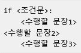
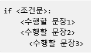
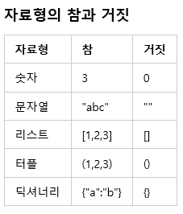
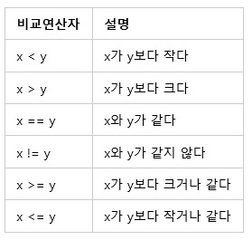
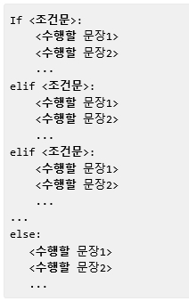

chapter.06 - if문에 대해 알아보자
다음을 상상해보자
"돈이 있으면 택시를 타고 가고 돈이 없으면 걸어간다"
위와 같은 상황은 언제든지 일어날 수 있느 상황이다.
프로그래밍을 할 시 조건을 판단해서 그 상황에 맞게 처리해야 할 경우가 생깁니다.
조건을 판단하여 해당조건에 맞는 상황을 수행하는 데 쓰이는 것이 if문이다.
위의 상황을 파이썬에서는 다음과 같이 만들 수 있다.
EX)
money = 1 #돈이 있다
if money: #돈이 있으면
print("택시를 타고 가라")
else: #돈이 없으면
print("걸어가라")
*들여쓰기
if문을 만들 때는 다음 처럼 if<"조건문"> :
다음의 문장부터 if에 속하는 모든 문장들에 들여쓰기를 해주어야 한다.
-다음 조건문의 식을 보고 틀린점을 알아보자

->에러가 난다. <"수행할 문장2">가 들여쓰기 되지 않았다.

->에러가 난다. 수행할 문장1,2와 수행할 문장 3과의 깊이가 다르다.
(2)조건문이란 무엇인가?
if<"조건문"> 에서 사용되는 조건문이란 참과 거짓을 판단하는 문장을 말한다.
자료형의 참과 거짓에 대해서는 이미 알아 보았지만 몇가지만 다시 알아보면 다음과 같다.

조건판단을 하는 경우 자료형 보다는 비교 연산자를 쓰는 경우가 많다.

#예제6.1
"만약 3000원 이상의 돈을 가지고 있으면 택시를 타고 그렇지 않으면 걸어가라"
money = 2000
if money >= 3000:
print("택시를 타고 가라")
else:
print("걸어가라")
#예제6.2
"돈이 3000원 이상 있거나 풀러줄 시계가 있다면 택시를 타고
그렇지 않으면 걸어가라"
money = 2000
watch = 1
if money >= 3000 or watch:
print("택시를 타고 가라")
else:
print("걸어가라")
->money는 2000이지만 watch가 1이기 때문에 money >= 3000 or watch라는 조건문이 참이 되기때문에
if문 다음의 문장이 수행된다.
#예제6.3
"만약 주머니에 돈이 있으면 택시를 타고,없으면 걸어가라"
pocket = ['paper', 'handphone', 'money']
if 'money' in pocket:
print("택시를 타고 가라")
else:
print("걸어가라")
->'paper', 'handphone', 'money']라는 리스트에 안에 'money'가 있으므로
'money' in pocket은 참이 되어서 if문 다음의 문장이 수행되었다.
if와 else 만을 사용하면 다음과 같이 표현된다.
ex)
pocket = ['paper', 'handphone']
watch = 1
if 'money' in pocket:
print("택시를 타고가라")
else:
if watch:
print("택시를 타고가라")
else:
print("걸어가라")
->뭔가 산만하고 이해가 쉽지 않다. 이와 같은 점을 보완하기 위해서
다중 조건 판단을 가능하게 하는 elif라는 것을 사용한다.
elif를 이용하면 다음과 같다
#예제6.5
pocket = ['paper', 'handphone']
watch = 1
if 'money' in pocket:
print("택시를 타고가라")
elif watch:
print("택시를 타고가라")
else:
print("걸어가라")
->즉, elif는 이전 <조건문>이 거짓일 때 수행하게 된다. 기본구조는 다음과 같다.

<출처> 점프 투 파이썬, 박응용(https://wikidocs.net/book/1)
<뒤로> | <메뉴> | <앞으로>